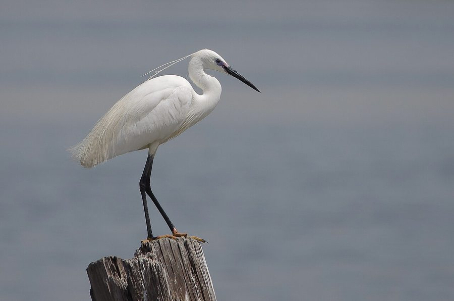

छोटा बगुलाLittle Egret
Egretta garzetta · Ardeidae · BRD-0030

- Scientific name
- Egretta garzetta (Linnaeus, 1766)
- Family
- Ardeidae
- Hindi
- छोटा बगुला
- Status here
- native
- IUCN
- LC
When to look कब देखें
Present all year.
छोटा बगुला / Little Egret
Egretta garzetta (Linnaeus, 1766) — Ardeidae
छोटा बगुला (लिटिल इग्रेट) — पूर्वी उत्तर प्रदेश के तालाबों, झीलों, दलदली क्षेत्रों और सिंचाई नहरों में पाया जाने वाला एक आम जलपक्षी है। यह पूरी तरह से सफ़ेद रंग का मध्यम आकार का बगुला होता है। इसकी सबसे बड़ी पहचान इसकी पतली काली चोंच (black bill), काले पैर और चमकीले पीले पंजे (yellow feet) हैं। प्रजनन काल के दौरान इसके सिर के पीछे दो लंबी, महीन कलगी (aigrettes) और पीठ पर सुंदर सजावटी पंख निकल आते हैं। यह पानी में धीरे-धीरे चलकर या दौड़कर अपनी चोंच से फुर्ती से छोटी मछलियों और कीड़ों का शिकार करता है। यह अन्य बगुले प्रजातियों के साथ सामूहिक रूप से घोंसले (heronries) बनाता है।
Quick Identification त्वरित पहचान
| Feature | Description |
|---|---|
| Size | Small, slender white egret (55–65 cm total length); neck long and thin |
| Colouration | Entirely pure white plumage throughout the year |
| Bill | Long, slender, straight, and completely black bill |
| Legs & Feet | Black legs contrasting sharply with bright yellow toes ("yellow slippers") |
| Breeding Plumes | Two long, narrow plumes on the nape; fine lacy plumes (aigrettes) on the back |
| Foraging behaviour | Wades actively in shallow water; often shakes its feet to stir up mud and flush prey |
Field tip: Look in shallow waters of village ponds. Watch for a medium-sized white bird with a black bill. When it walks, you will see its bright yellow feet contrast sharply with its dark black legs—a diagnostic field mark.
Morphology आकारिकी
Biometrics (typical measurements in the northern Indian plains):
| Measurement | Range |
|---|---|
| Total length | 550–650 mm |
| Wing (flattened chord) | 250–290 mm |
| Tail | 85–100 mm |
| Tarsus | 95–110 mm |
| Bill (culmen from base) | 75–90 mm |
| Weight | 280–400 g |
Plumage: The feathers are entirely pure white. During the breeding season (monsoon), the adult develops two long, narrow plumes (aigrettes) up to 20 cm long projecting from the nape. The feathers on the back and upper breast also become elongated, loose, and curved, forming delicate ornamental plumes.
Bare parts: The long, slender bill is jet-black. The bare facial skin in front of the eyes is grey-blue (turns yellow or reddish-purple for a few days during courtship). The irises are bright yellow. The legs are black, while the toes are greenish-yellow to bright yellow.
Vocalisations
Little Egrets are silent when foraging but noisy at nesting colonies.
- Alarm / Flight Call: A dry, raspy, low croak: karrk or aahh, given when startled or when taking off.
- Colony Call: Various guttural bubbling, croaking, and grunting noises: wulla-wulla-wulla, uttered during territory disputes and nest building.
Ecological Role पारिस्थितिक भूमिका
Active aquatic predator.
- Wading piscivore: They occupy shallow edge zones of ponds and canals, catching surface fish and aquatic insects.
- Commensal associate: Sometimes forage in association with grazing cattle or other large waterbirds to catch prey flushed by them.
- Indicator species: Highly sensitive to water pollution and loss of native wetland vegetation, their abundance is a proxy for wetland health.
Life Cycle / Phenology जीवन चक्र
- Breeding season: June to September, aligned with the southwest monsoon.
- Nesting: They nest colonially in large mixed heronries, built in leafy trees near water.
- Nest structure: A flat, circular platform of dry twigs, constructed by both parents.
- Clutch size: 3 to 4 pale greenish-blue eggs.
- Incubation: 21–25 days, shared by both parents.
- Fledging: Chicks are fed semi-digested fish by regurgitation. They fledge and leave the nest in 30–35 days.
Host Plants or Prey आहार
Primary food items:
- Fish: Small barbs (Puntius sophore), minnows, and fingerlings of major carps.
- Insects: Aquatic beetles, water bugs, and dragonfly larvae.
- Amphibians: Tadpoles and small frogs (such as Fejervarya limnocharis).
Predators / Natural Enemies शत्रु
- Raptors: Bonelli's Eagles and Black Kites prey on juveniles.
- Corvids: House Crows (Corvus splendens) raid nests for eggs.
- Reptiles: Large tree snakes (Ptyas mucosa) prey on eggs and chicks.
Agricultural / Human Relevance कृषि प्रासंगिकता
Pest control in paddies. They frequently visit waterlogged paddy fields, consuming destructive insect pests and crabs.
Historically, they were hunted for their decorative back feathers (aigrettes) used in millinery, but they are now fully protected under the Wildlife Protection Act, 1972.
Expected Locally स्थानीय रूप से अपेक्षित
Not a field record. Written from published accounts for eastern Uttar Pradesh. No confirmed local sighting yet — if you have seen it, that is what the atlas needs.
अभी तक स्थानीय पुष्टि नहीं। यह विवरण प्रकाशित स्रोतों से है, किसी अवलोकन से नहीं।
A common resident along the Saryu and Kuwano rivers in Basti district. They are regularly observed in village ponds (talab) alongside the [BRD-0004 Indian Pond Heron]. Mixed breeding colonies are frequently established in large tamarind (Tamarindus indica) trees near rural water bodies.
Distribution वितरण
Global range: Widespread across Europe, Africa, Asia, and Australia.
In India: Widespread in all plains and lowlands near water.
In Uttar Pradesh: Common resident in all river basins and wetlands.
In Basti district / eastern UP: Found near all canals, rivers, and village ponds.
Research Questions शोध प्रश्न
Anyone can investigate these | कोई भी इन प्रश्नों की जाँच कर सकता है
- How does the foot-stirring foraging rate of Little Egrets compare in muddy water vs. clear water? — Record foraging steps and prey strikes in different turbidities.
- What is the nesting success rate of Little Egrets in colonies located inside villages vs. those far from settlements? — Monitor and compare egg survival rates.
- Do Little Egrets defend feeding territories against Intermediate Egrets? — Observe interactions where species overlap.
- How does the color of the facial skin change during the peak courtship period in Basti populations? / प्रजनन काल के चरम प्रदर्शन के दौरान छोटे बगुले की चेहरे की त्वचा का रंग कैसे बदलता है? — Document face color changes in breeding pairs.
- Does the use of chemical fertilizers in paddy fields affect the density of Little Egret prey? / क्या धान के खेतों में रासायनिक उर्वरकों का उपयोग छोटे बगुले के शिकार (मछली/कीड़ों) की संख्या को प्रभावित करता है? — Survey prey abundance in organic vs. chemical fields.
Similar Species मिलती-जुलती प्रजातियाँ
| Species | Key Difference | हिंदी |
|---|---|---|
| [BRD-0029 Cattle Egret] (Bubulcus ibis) | Stockier; shorter yellow bill; yellow-green legs; breeding plumage has orange-buff patches; feeds on dry land | गाय बगुला — पीली चोंच, गठीली गर्दन और खेतों में चरना |
| Intermediate Egret (Ardea intermedia) | Larger (70 cm); yellow bill (turns black in breeding but lacks yellow toes); longer neck | मझाला बगुला — बड़ा आकार, पीली चोंच और काले पंजे |
| Great Egret (Ardea alba) | Much larger (90 cm); extremely long S-shaped neck; yellow bill; black feet | बड़ा बगुला — बहुत विशाल आकार और लंबी घुमावदार गर्दन |
Field rule: Slender white body, long black bill, black legs with bright yellow feet, and active wading foraging in shallow water identify the Little Egret.
Taxonomy & Classification वर्गीकरण
Original description. Carl Linnaeus described the Little Egret as Ardea garzetta in 1766 in his work Systema Naturae, 12th edition (Vol. 1, p. 237). The type locality was northeastern Italy. The genus name Egretta was introduced by T. Forster in 1817, derived from the French aigrette for the ornamental plumes. The specific name garzetta is the Italian name for this small heron.
Subspecies. Two subspecies are recognized globally. The subspecies present in UP is:
| Subspecies | Authority | Range | Notes |
|---|---|---|---|
| E. g. garzetta | (Linnaeus, 1766) | Europe, Africa, Asia | UP subspecies; nominate form; widespread |
Family and order placement. Placed in the order Pelecaniformes, family Ardeidae, subfamily Ardeinae.
Phylogenetic notes. Egretta garzetta is closely related to Egretta gularis (Western Reef Heron), with which it occasionally hybridizes.
IUCN status rationale. Listed as Least Concern (LC) due to its extremely large global range, large population, and stable population trends.
Photo Gallery फोटो गैलरी
References संदर्भ
- Linnaeus, C. (1766). Systema Naturae per regna tria naturae. Editio Duodecima. Laurentii Salvii, Holmiae, p. 237. [original description]
- Ali, S. & Ripley, S. D. (1999). Handbook of the Birds of India and Pakistan. Vol. 1. Oxford University Press, New Delhi.
- Grimmett, R., Inskipp, C. & Inskipp, T. (2011). Birds of the Indian Subcontinent. 2nd ed. Christopher Helm, London.
- Hancock, J. & Kushlan, J. (1984). The Herons Handbook. Croom Helm, London.
- BirdLife International (2024). Egretta garzetta. IUCN Red List of Threatened Species. Ver. 2024.
- GBIF Occurrence Data — Egretta garzetta, Uttar Pradesh (2010–2025).
Source file: species/fauna/birds/little_egret.md